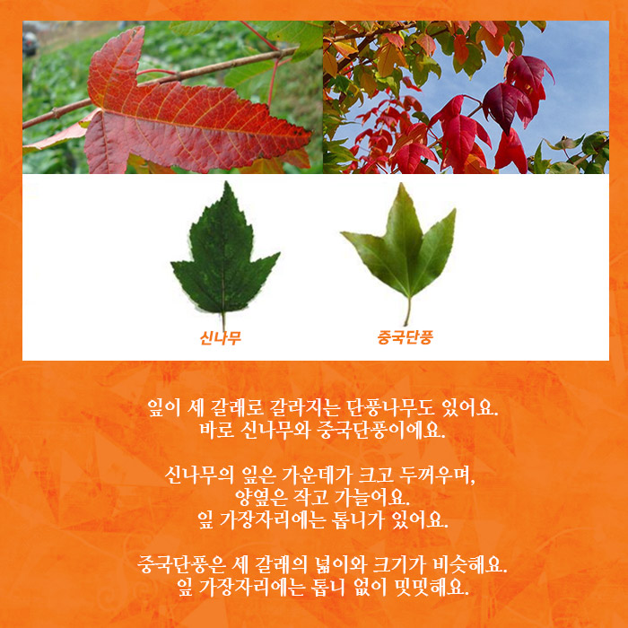
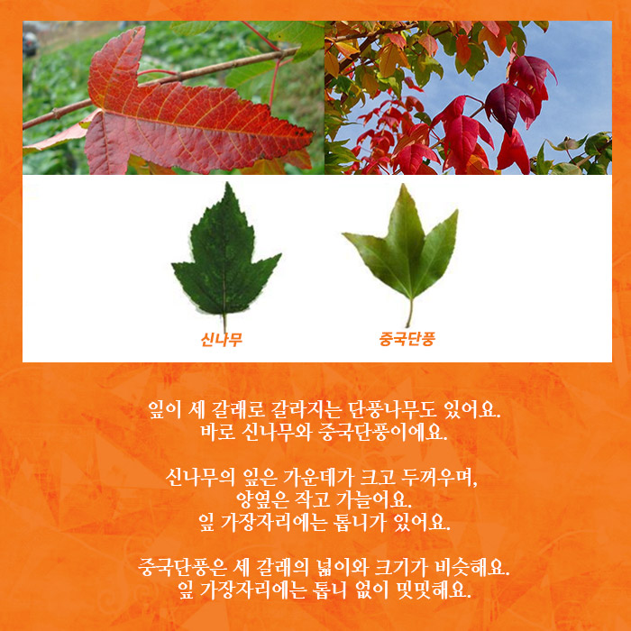

중국단풍 가을을 수놓는 빨간 멋쟁이!
단풍나무과의 낙엽 키 큰나무
피는 시기 : 4~5월
열매 맺는 시기 : 8월
다른 이름 : 삼각 단풍, 세뿔단풍, 세갈래단풍나무
꽃말 : 게으름뱅이
가을이면 울긋불긋 물드는 단풍나무
가을이 되면 초록의 나무들이 옷을 갈아입어요. 빨갛게, 노랗게, 때로는 갈색으로 형형색색 물이 들지요. 저마다 울긋불긋 아름다움을 뽐내지만, 선명한 빛깔로 가을을 물들이는 단풍나무에 견줄 수는 없어요. 그래서 이름도 단풍나무 아니겠어요?
가지각색 잎 모양의 단풍나무들
붉게 물들었다고 다 같은 단풍나무는 아니에요. 단풍나무는 종류가 아주 많거든요.
단풍나무는 손바닥 모양의 잎이 5~7개로 갈라져 있어요. 당단풍나무는 9~11개로 갈라져 있어요. 모양도 단풍나무에 비교해 둥글둥글해요. 고로쇠나무는 잎이 5개로 갈라져 있어요. 잎이 가늘고 깊게 갈라지는 단풍나무에 비교하면 굵게 갈라지고 잎 가장자리가 밋밋해요.
복자기와 복장나무는 단풍나무의 잎과 달라요. 작은 잎이 3개씩 모여 하나의 잎이 되지요. 복자기는 잎 위쪽에 큰 톱니, 복장나무는 전체에 톱니가 있어요.
잎이 세 갈래로 갈라지는 단풍나무도 있어요. 바로 신나무와 중국단풍이에요. 신나무의 잎은 가운데가 크고 두꺼우며, 양옆은 작고 가늘어요. 잎 가장자리에는 톱니가 있어요. 중국단풍은 세 갈래의 넓이와 크기가 비슷해요. 잎 가장자리에는 톱니 없이 밋밋해요.
중국단풍에 대해 더 알아볼까요? 중국단풍은 중국에서 왔어요. 우리가 흔히 보아왔던 단풍나무와는 다른 모습을 하고 있지요. 잎은 세 갈래로 갈라지고, 광택이 나요. 잎 모은 오리발 같기도 하고 튤립 같기도 해요. 나무껍질이 벗겨지는 것도 다른 점이랍니다.
“왜 단풍이 드는 걸까?”
나무는 가을이 되면 겨울 준비를 합니다. 수분과 영양분을 아끼기 위해 나뭇잎을 떨어뜨릴 준비를 하는 것이죠. 나뭇가지와 나뭇잎 사이에 떨켜 층을 만들어 수분과 영양이 다니는 길을 막는답니다. 그때 잎의 엽록소의 초록색이 사라지고, 빨강, 노랑 등의 다른 색으로 모습이 바뀌게 됩니다. 결국 단풍이 드는 이유는 자신을 지키기 위한 것입니다. 덕분에 우리는 아름다운 가을을 만끽할 수 있고요. 단풍이 물드는 가을, 밖으로 나가 울긋불긋 옷을 입은 단풍나무를 관찰해보세요.